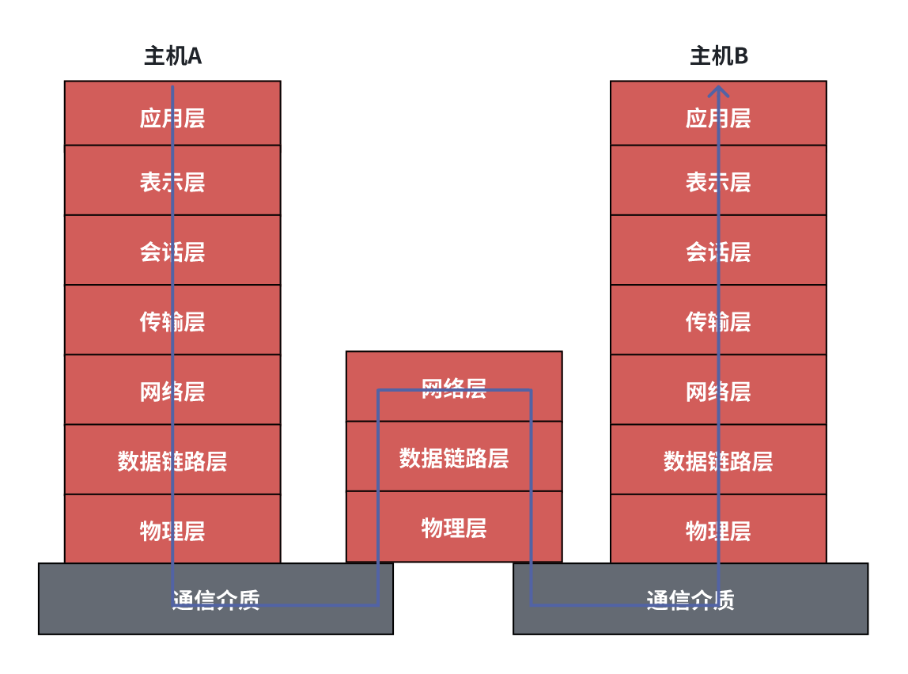

计算机网络中的基础概念
一、基础概念
介绍
如下图所示，IOS和Android手机以及Widnows和Mac电脑都可以叫做计算机系统，也可以叫端系统，这些路由器或者交换机叫做通信设备，连接计算机系统与通信设备的线称为线路。
计算机网络是一个将分散的、具有独立功能的计算机系统，通过通信设备与线路连接起来，由功能完善的软件实现资源共享和信息传递的系统。
计算机网络是一种互联的、自治的计算机集合。
-> 互联指的是互联互通，就是同种手机通过线路经过通信链路通往任意一个计算机系统。
-> 自治是指计算机系统之间无主从关系，不能彼此控制对方。
计算机网络的功能
数据通信
就是联通性，计算机系统可以依赖计算机网络来传输数据。
资源共享
硬件资源共享：例如多台电脑可以共用一台打印机。
软件资源共享：例如部分软件不需要下载到电脑上既可以和别的电脑共享使用。
数据资源共享：一个在线文档可以在不同的计算机系统一起看。
分布式处理
多台计算机可以各自承担统一工作任务的不同部分。
提高可靠性
在计算机网络中，若一台计算机宕机了，导致它所分配的任务无法完成，网络中的其他计算机可以代替他的工作。
负载均衡
多台计算机分配统一工作，大家各司其职，干活不累，是计算机之间更加亲密。
计算机网络的组成
组成部分
硬件：硬件包含端系统即主机、链路，例如双绞线光纤、还有通信设备、例如路由器。
软件：软件首先是应用软件，而且是联网的，比如浏览器、微信等。
协议：协议是网络的核心，它是由一系列规定约定的集合。
工作方式
边缘部分：即主机所存在部分，叫做边缘部分，用户可以直接使用。
两种方式：
C/S方式：即客户端/服务器模式。
P2P方式：大家都是对等的，没有服务器客户端的概念。
核心部分：包含一部分服务器和大部分网络。
PS：边缘部分想要实现网络通信，必须由强大的核心部分作支持。
功能组成：
通信子网：用来实现数据通信。
资源子网：用来实现资源共享/数据处理。
如下图所示，OSI七层模式示意图：上三层是资源子网，下三层是通信子网。
计算机网络的分类
按分布范围分
广域网WAN：跨度非常广，通常要跨国。常用于交换技术。
城域网MAN：一个城市内的跨度。
局域网LAN：一千公里左右，例如常用的WLAN，常用于广播技术。
个人区域网PAN：十米以内，例如蓝牙耳机。
按使用者分
共用网：三大运行上移动电信联通的网。
专用网：军队医院专用的网络。
按照交换技术分
电路交换、报文交换、分组交换。
按拓扑结构分
总线性、星型、环形、网状型。
按照传输技术分
广播式网络：共享公共通信信道。
点对点式网络：正在使用分组存储转发和路由选择机制。一对一通知。
二、标准话工作及相关组织
标准化工作
概念
标准化对于计算机网络而言十分重要，如果不统一就会造成版本不兼容问题。
要实现不同厂商的软、硬件之间的互联互通，必须遵从统一的标准，这就是标准化工作。
标准的分类
法定标准：有权威机构所定制的正式的，合法的标准。比如OSI标准。
事实标准：某些公司的产品在市场竞争中占据了主流，时间长了，这些产品中的协议和计数就成了标准，比如TCP/IP协议。
RFC标准
request for comments标准：请求评论标准，因特网标准的形式，因特网标准一定是RFC，但是RFC不一定是因特网标准。
RFC标准上升到因特正式标准的四个阶段：
1、因特网草案（Internet Draft）：这个节点不是RFC文档-需要将自己的草案邮寄给rfc编辑的邮箱，并等待回复。（rfc-editor@rfc-editor.org）
2、建议标准（Proposed Standard）：从这个阶段开始称为RFC文档-如果rfc编辑觉得草案可行，草案可称为下一个RFC文档。
3、草案标准化（Draft Standard）：标准已经可以交给IETF、IAB去进行审核。
4、因特网标准（Internet Standard）：若第三阶段审核通过，则该标准便称为一个真正意义上的因特网标准。
标准化工作的相关组织
国际标准化组织ISO：主要共享式建立了OSI参考模型，和HDLC协议。
国际典型联盟ITU：指定了通信规则。
国际电气电子工程协议会IEEE：这是一个学术机构，指定了IEEE802系列标准、以及5G计数相关协议。
Internet工程任务组IETF：与IAB一同负责因特网相关标准的指定。
速率相关的性能指标
速率
概念：速率又称数据率，或数据传输率或比特率，即链接在计算机网络上的主机在数字信道上传送的数据位数的速率。 这里的速率就是我们常见的下载速度比如b/s kb/s Mb/s Gb/s
速率是发送端发送到信道上的速率，而不是传送到接收端大的比特流的速率。
注意单位换算：
11kb/s = 1000 b/s b 是bit21kB/s = 1024 B/s B是 Byte字节速率一般是比特每秒，单位是1000。
内存一般用字节B描述。单位缓存时210次方。
带宽
概念：带宽原本就是指某个频率具有的频带宽度，就是最高频率与最低频率之差，单位是赫兹Hz。
在计算机科学中，贷款指的是通信线路传递数据的能力，通常是指单位时间内从网络的某一点到另一点所能通过的“最高数据率”。单位与速率同样是比特每秒。
通俗来说，带宽就是网络设备所能支持的最高速度，比如100M的交换机所能达到的最高速度就是100Mb/s。
设某主机通过光纤传输信息的速率位3Mb/s。而光纤的传播速度是c = 3 * 108m/s，假设光纤中智能存在2Byte的信息，请问这条光纤有多长？
N = 3Mb/s = 3 * 106bit/s
c = 3 * 108 m/s
// 这个是 每bit需要100m
c/n = 100 m/bit
2Byte = 16 bit
L = 16 bit * 100 m/bit = 1600m
吞吐量
吞吐量表示在单位时间内通过某个网络（信息或接口）的数据量，单位位比特每秒，吞吐量收到网络的贷款或网络的额定速率限制。
带宽和吞吐量的区别：带宽是极限值，是不变的；吞吐量是实际值，是变化的。
时延、时延带宽积、RTT和利用率
时延
时延指的是数据（报文、分组、比特流）从网络（或链路）的一段传送到另一段的时间。页叫延迟或迟延单位是s。
时延分4大类：
1、发送时延（传输时延）：从发送分组到第一个比特算起，到该分组的最后一比特发送完毕所需要的时间。 发送时延（发送速率） = 数据长度 / 信道带宽
2、传播时延：数据在信道上的传输所需的时间。取决与电磁波传播速度和链路的长度。
传播时延 = 信道长度 / 传播速率
3、排队时延：等待输入、输出链路可用所要等待的时间。 数据进入通信设备（比如路由器）后要排队，在通信设备存储一段时间，这段时间叫做排队时延。
4、处理时延：处理时间即是通信设备对数据进行检错所需要的时间。
如果提高了贷款，那么同等到达晓得数据发送时延会减少，但是传播时延并不会，传播时延值取决于信道长度和传播速率。提高贷款叫做高速链路。
假如通信设备就像是北京、上海，那么信道就是从北京到上海的高速公路，比特流就像高速路上的车辆，那么发送延迟就是在出发前要加油等，传播时延就是从家到高速路口，排队时延就是过高速闸道口排队。
时延带宽积
时延带宽积 = 传播时延 * 带宽 单位是bite。
时延带宽积用来描述一条链路例可以存在的数据量，即“某条链路现在有多少比特”。
相当与时一段水管，时延带宽积就相当与 某段水管里边的积水量。
往返时延RTT
往返时延RTT指的是从发送方发送数据开始，到发送方接收方的确认（接收方接收到数据后立即发送确认）总共经历的时延。
比如，服务器开启之后，一个客户端发送请求被服务器端，被服务器接收以后有一定的时延，服务器接收到请求后立即响应请求，并将信息发送的客户端上，这又有一个时延。请求发送给客户端的时延加上响应发送给客户端的时延之后就是往返时延。
查看往返时延 使用ping命令。
RTT越大，在收到确认之前，可以发送的数据越多。
往返时延RTT包括：
-> 往返传播时延 = 传播时延 * 2。
-> 末端处理时间，接收方的处理，相当于服务器对客户端请求的一个处理过程。
自然不包括发送时延。
利用率
信道利用率：信道利用率 = 有数据通过的时间/ 没有时间通过的时间 * 100%。
低信道利用率就像宽阔的大马路上只有2 3量车，数据量不够浪费。
高信道利用率就像上班早高峰，非常拥挤。
网络利用率：把所有信道的信道利用率加权再求平均值。
时延与利用率之间的关系：
三、分层结构、协议、接口、服务
分层
为什么要分层？比如，在发送文件之前要完成的工作有：
发起通信的计算机必须将数据通信的通路进行激活。
高速网络如何识别目的主机。
发送通信的计算机要查明目的主机是否开机，并且与网络连接正常。
发起通信的计算机要弄清楚，对方的计算机中文件管理程序是否已经做好准备工作。是否做好接收文件的准备，是否有足够的内存空间存储接受文件。
确保差错和意外可以解决。
由此可以知道，发送文件是一个繁琐的问题，而我们知道分治算法，将繁琐的问题分成许多简单的小问题逐个解决，七层协议的划分也可以说是用到了分治算法，分成7层协议逐个解决问题，更加高效方便。
如何分层呢？
分层中的专有名词：
-> 实体：第n层的活动元素就称为第n层实体。比如我送你一本书，数就是实体。
-> 对等实体：处于同一层实体就互为对等实体。比如一双筷子就是对等实体。
-> 协议：为进行网络中的对等实体数据交换而提供的规则、标准或约定称为网络协议。比如交通规则。
协议有3个概念：
语法：规定传输数据的格式。
语义：规定所有完成的功能。
同步：规定各种操作的顺序。
-> 接口（访问服务点SAP）：接口是上层使用下层服务的入口。每两层相邻之间都存在接口。
-> 服务：下层相邻上层提供的功能调用。7层协议相邻的两层中，下层为上层提供服务。
分层的基本原则：
每层之间相互独立，每层只实现一种相对独立的功能。
每层之间界面自然清晰，易于理解，相互交流尽可能少。
结构上要分割开，每层都可采用最合适的技术。
保持上层和下层的独立性，上层单向使用下层提供的服务。
整个分层结构应该可以租金标准化工作。
认识分层结构
如图所示，计算机网络中逐层递减的过程中，数据越来越大。

SDU服务数据单元：为完成用户所要求的功能而应传送的数据。
PCI协议控制信息：控制协议操作的信息。
PDU协议数据单元：对等层次之间传送的数据单元。PDU 就是下一层的SDU。
四、OSI参考模型
OSI七层参考模型
第一个剔除网络体系结构的使IBM公司的SNA，随后还有DECdeDNA、美国的TCP/IP等。都有自己的标准协议，用起来不方便，国际标准化组织用ISO与1984剔除了开放系统互联（OSI）。
OSI模型尽管理论上成功了，但是市场上比较失败，市场上用的比较多的还是TCP/IP模型。
自下而上的 物链网输会示用 ，其中上三层代表资源子网，用于数据处理。下三层是通信子网，用于数据通信。
OIS参考模型解释信道通信过程

如上图所示，主机A和主机B中存在通信设备，这个通信设备可以是路由器、交换机、网桥等。
数据在主机上传输时七层都要通过，在通信涉笔上只需要在下三层上传输。
数据在上四层上的传输是端对端式的，一定会指定重点。
数据在下三层上的传输是点对点式的，不一定指定重点，但是一定指定下一个目标，即主机B还是下一个路由、交换机。
数据从发送端主机到发送端物理层的时候，是一步一步往下传递，就像是送给别的书在包装一样，从发送端物理层到达发送端主机的过程中就好像在拆包装一样，中间的通信设备就好比快递公司。
数据链路层需要在头尾都加上数据，物理层直接把数据转换成比特流进行传输。
简单解释各个层
应用层
应用层通俗的理解就是所有能与用户交互并产生网络流量的程序。比如微信、游戏等。
典型的应用层服务和协议：
-> 文件传输协议：FTP。
-> 电子邮件协议：SMTP。
-> 万维网协议：HTTP。
表示层
表示层可以理解就是两个通信系统中想要交换信息的表示方式（语法和语义）。
功能：
-> 数据格式变换：相当于翻译官的作用，把比特流转换成相应的文件。
-> 数据加解密：比如我们在发微信的时候直接发给好友的信息，就是不用加密和直接传输。
-> 数据压缩和恢复：太大的文件直接传的话可能会占用很大的空间，可以在发送之前将文件进行压缩，接收端可以将文件进行解压。
会话层
会话层就是向表示层、用户进程提供建立连接饼子连接上有序的传输数据，这个过程叫做会话，也叫建立同步。
比如在某个标签页上打开了网站A观看视频，在另一个标签上打开了网站B也观看视频，在标签A上快进视频那么视频A快放视频B没有影响就是会话层的作用。
功能：
-> 建立、管理、终止会话。
-> 使用校验点可使会话在通信失效时从校验电筒不点继续恢复通信，实现数据同步。
主要协议：
-> ADSP、ASP。
传输层
传输层主要负责主机两个进程的通信，即端到端的通信。传输单位是报文段或用户数据报。
特点：
-> 传输层连接其上三层资源子网和下三层通信子网。
-> 上四层端到段，下三层点到点。上四层相当于给别人邮寄一本书，只需要从哪儿寄到哪儿，只用管起点和钟点，下三层就相当于快递公司，中途有中转站，有线路等。
功能：
-> 可靠传输：不仅要把数据发上去，还要让接收端确认数据是否接受到数据，如果没有收到需要重复发送。不可靠传输：不用管那么多，直接发。
-> 差错控制：如果发送的数据有问题，传输层就要弥补这个错误。
-> 流量控制：发送端可以控制发送的速率。
-> 复用分用：复用，就是指多个应用层的进程可同时使用下面的传输层的服务，比如八车道合并成一车道、分用，传输层把收到的信息分别交换给上面的应用层中的响应的进程。
网络层
网络层主要任务是把分组从源端传送到目的端，为分组在交换网上的不同注解已提供通信服务。网络层传输的单位是数据段。
当数据报过长的时候，会将数据包进进行切割，切割成多个分组。
功能：
-> 路由选择：从主机A到主机B的链路选择。
-> 流量控制：控制发送端的流量。
-> 差错控制：数据有问题的话就会对数据进行纠正，保证传输层的数据是没有问题的。
-> 拥塞控制：如果网络中所有节点都来不及接受分组，丢弃大量分组的话，网络就处于拥塞状态，因此要采取一定积极操作环节这种拥塞。拥塞控制是控制全局的速度的。
主要协议：IP、IPX、ICMP、IGMP、ARP、PARP、OSPF。
数据链路层
数据链路层主要任务就是把网络层传下来的数据报组成帧，数据链路层的传输单位是帧。
功能：
-> 成帧：定义帧的开始和结束，定义比特流从哪儿开始都哪儿结束。
-> 控制差错：就是对数据帧进行数据检错。
帧错：丢弃或修改差错的帧。
位错：丢弃或修改错差的比特位。
-> 流量控制：就是控制发送端的流量。
-> 访问（接入）控制：控制多信道的访问，就像下面这样的拓扑图，多个主机有共享的信道，不能同时使用共享信道。
主要协议：SDLC、HDLC、PPP、STP。
物理层
物理层不需要对数据做任何处理，主要任务就是物理媒体上实现比特流的透明传输，物理层传输单位是比特。
透明传输是指不管所传数据是什么样的比特组合，都应当在链路上传输。比如解释是光纤，就是把比特流转换成一明一暗，如果介质是网线，就转换成高地电压。
功能：
-> 定义接口特性：比如电缆有多少引脚，引脚有怎么连接。
-> 定义传输模式：
单工：单向发送，只能单向发送。
半双工：可以发送也可以接受，但是同一时间只能发送或接收。
全双工：没有任何限制既能发送也可以接受，同一时间可以同时发送或接收。
-> 定义传输速率。
-> 比特同步。
-> 比特编码：1和0代表的含义。
主要协议：Rj45、802.3。
四、TCP、IP参考模型与五层参考模型
OSI参考模型与TCP/IP参考模型的关系
两者关系
如上图所示，OSI参考模型是一个标准的通信协议，理论上是可行的，但是实际上应用的比较少。
TCP/IP参考模型，的协议栈很早之前就存在，并且实践中大量使用，比OSI应用的更广泛。
两者相同点：
-> 都分层。
-> 都是基于独立的协议栈。
-> 都可以实现异构网络互联（所有厂家都可以使用计算机系统应用，win系统可以给安卓发消息）。
不同点：
-> 基本概念：OSI模型先于协议发明，定义了服务、协议、接口三点；TCP/IP模型先于模型发明，在设计之初就考虑到异构互联问题，将IP作为重要层次。
-> 网络层：OSI模型无连接+面向连接；TCP/IP模型无连接。
-> 传输层：OSI模型面向连接；TCP/IP模型无连接+面向连接。
注意：
-> 无连接相对于面向连接而言没有那么多过程，直接进行数据传输（UDP）。
-> 面相连接分为三个阶段，第一个阶段是建立连接，在此阶段，发出一个建立连接的请求。只有在连接成功建立之后，才能开始数据传输，第二个阶段是等数据传输完毕，第三个阶段是释放连接。
五层参考模型
五层参考模型综合了OSI和TCP/IP的优点。
-> 应用层：支持各种网络应用，协议有FTP、SMTP、HTTP。
-> 传输层：进程与进程的数据传输，协议有TCP、UDP。
-> 网络层：源注解到目的主机的数据分组路由与转发，协议有IP、ICMP、OSPF等。
-> 数据链路层：把网络层传下来的数据报组成数据帧，协议有Ethernet、PPP。
-> 物理层：比特传输。
相比较来说，OSI七层模型的优点是每一层的功能清洗完善；TCP/IP四层参考的优点是层次少，每层之间的功能重复少；五层参考模型吸收了两者各自的优点。
五层参考模型的数据封装与解封：